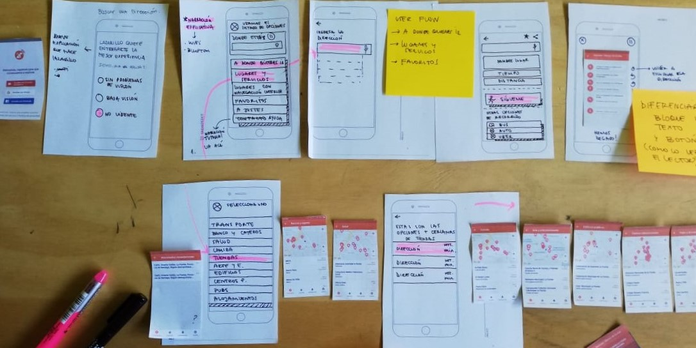
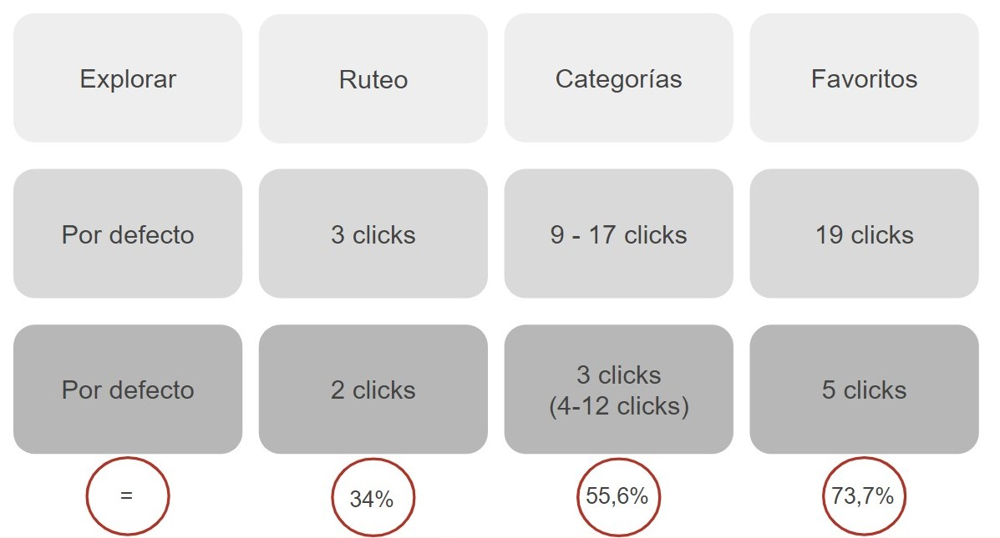

Optimizando el flujo de navegación de Lazarrillo app

ACERCA DEL PROYECTO
Lazarillo es una startup chilena que ha desarrollado una aplicación móvil de orientación inteligente para personas ciegas y de baja visión, que les guía a través de la ciudad por medio de mensajes de voz, entregándoles orientación y autonomía a las personas con discapacidad visual. La aplicación actualmente tiene 10.000 usuarios activos, de un total de 80.000 usuarios registrados.
Actualmente en Lazarillo buscan que sus usuarios puedan sacar el mayor provecho posible de las funcionalidades que tiene la app, es por esto que se contactan con nuestro equipo para detectar los problemas que presentan sus usuarios y trabajar en una propuesta de mejora.
EL DESAFÍO
¿Cómo optimizar la navegación de la app para que los usuarios puedan descubrir y usar las nuevas funcionalidades integradas a la app?
INVESTIGACIÓN
Trabajar con Lazarillo fue un gran desafío desde el comienzo, en la primera etapa nos dedicamos a entender como es que las personas ciegas y con baja visión utilizan la tecnología, como se relacionan con sus dispositivos móviles y también conocer las diversas herramientas de accesibilidad que tienen disponibles según su tipo de dispositivo, ya sean Android o iPhone.
Benchmark

Puedes revisar el análisis completo aquí
La siguiente etapa realizamos un brenchmark con otras app para personas ciegas o con baja visión, con el fin de explorar sus funcionalidades y conocer la forma en que estas están dispuestas a los usuarios, pudimos determinar lo siguiente:
- Las interfaces se caracterizan por ser simples y tener colores que hacen alto contraste.
- Prestan bastante atención a los tamaños y tipo de tipografía.
- Algunas apps tienen tutoriales bastante completos y a su vez complejos. La app Lazzus por ejemplo tiene una guía rápida y versión audible.
Userflows
Y para concluir esta etapa quisimos entender la navegación de Lazarrillo app, exploramos sus diferentes funcionalidades, los diferentes flujos que nos permitían llegar a ellas y también observamos a usuarios ciegos utilizar la app lo que nos permitió entender cuales eran los flujos de uso más naturales para ellos.

Entrevistas
Stakeholders
Entrevistamos a 3 stakeholders de Lazarillo; el Director Ejecutivo, el Director de Experiencias de Usuarios y la Gestora de Fondos. Estas entrevistas nos permitieron identificar las principales problemáticas que presenta Lazarillo actualmente, que son:
- Los usuarios consideran importante la disponibilidad de la función favoritos en la app, sin embargo ellos no tienen conocimiento de que la app ya cuenta con esta.
- Las mayores quejas o solicitudes de los usuarios con relación a la app, es que mejore la precisión, tenga un tutorial para funciones avanzadas, simplificar funcionalidades, entre otras.
Entrevistas y Testeo de la app con usuarios
Objetivo fue conocer cómo los usuarios utilizan e interactúan con su celular en el día a día, qué aplicaciones utilizan y cómo.
- A partir de esta experiencia fue que pudimos entender cómo es que las personas con discapacidad visual interactúan con la tecnología y cómo los lectores de pantalla son quienes interpretan para ellos todo aquello que aparece en la pantalla.
- Con el paso el tiempo se memorizan muchos de los flujos y posiciones de los botones de las aplicaciones.
- Nos mostraron cómo utilizan Lazarillo app y en qué momentos les es de ayuda.
- Pudimos entender la importancia que tiene para ellos el poder movilizarse de forma independiente y autónoma.
Customer Journey Map
Consideramos importante utilizar esta herramienta a fin de lograr plasmar de forma lineal todos los aprendizajes obtenidos acerca del viaje del usuario en los procesos anteriores, nos enfocamos en los usuarios nuevos quienes tienen su primer acercamiento con Lazarillo app.
Usuario Principiante
Es quien acaba de instalar la app, debe explorar la app para conocer sus funcionalidades y las disposiciones que estas tienen, hasta llegar a la funcionalidad que busca específicamente.
Puedes ver la imagen en detalle al hacer clic aquí

PROCESO DE IDEACIÓN
Para este proceso agrupamos los principales aprendizajes del proceso de investigación, para dirigir de la mejor forma posible nuestros esfuerzos utilizamos la herramienta How Might We...? que nos permitió definir y esquematizar lo siguiente:

PROCESO DE DISEÑO
Wireframe
En esta etapa diseñamos nuevas pantallas que se complementaban con las ya existentes, buscábamos la forma de hacer que navegación de la app fuese lo más clara y simple posible.

Prototipo de alta
Implementamos una nueva pantalla al iniciar por 1ra vez la app, en esta se ofrece la opción de revisar el tutorial de la app y también pasar directamente a la app, donde previamente se le consulta al usuario sobre su situación de discapacidad y a partir de esto personalizar algunas características según sea el caso.

Se cambió además la disposición de los elementos centrales de una cuadricula a un listado, se re-categorizaron algunas funcionalidades con el fin de presentar un flujo más ordenado y simple al usuario.

Y finalmente se decidió cambiar la barra inferior fija anterior a una en la que solo se presentan 3 opciones al usuario ¿Donde estoy?, pausar o reanudar una exploración y repetir la última indicación, esto con la intensión permitir un rápido acceso a estas funcionalidades que son primordiales para la negación de un espacio.
A continuación puedes revisar un video del prototipo interactivo diseñado en Adobe Xd que incluye comandos de voz.
PROCESO DE VALIDACIÓN
Impacto en métricas
Generamos métricas a partir de las 4 funcionalidades principales de Lazarillo, contabilizando el número de clicks para llegar a estas en la versión actual vs. la propuesta desarrollada. En la imagen se visualiza la comparación en el número de clicks y cómo se traduce la disminución en porcentaje (%).

Testeo con usuarios
El testeo se realizó en el colegio para ciegos Santa Lucía en la comuna de La Cisterna, a partir de este se pudieron recoger los siguientes resultados y aprendizajes:
Testeo a personas ciegas
- El botón “Sígueme”, no les hace sentido “podría ser ir a pie”, necesitan un mensaje más directo.
- Los usuarios que ya llevan tiempo usando Lazarillo prefieren la disposición en cuadrícula, ya que les permite acceder directamente a alguna opción y memorizar.
- Los usuarios no entendieron El botón “Lugares accesibles” ya que no lograban interpretar la frase utilizada.
Testeo a personas con baja visión
Esta era una versión en la que se aplicaba alto contraste, por lo que todo el color rojo de la versión clásica de la app en esta era de color negro.
- La disposición en cuadrícula les permite recordar las siluetas de los iconos.
- El contraste ayuda bastante a una mejor visualización.
- Quisieran haber podido usar una lupa para ver mejor.